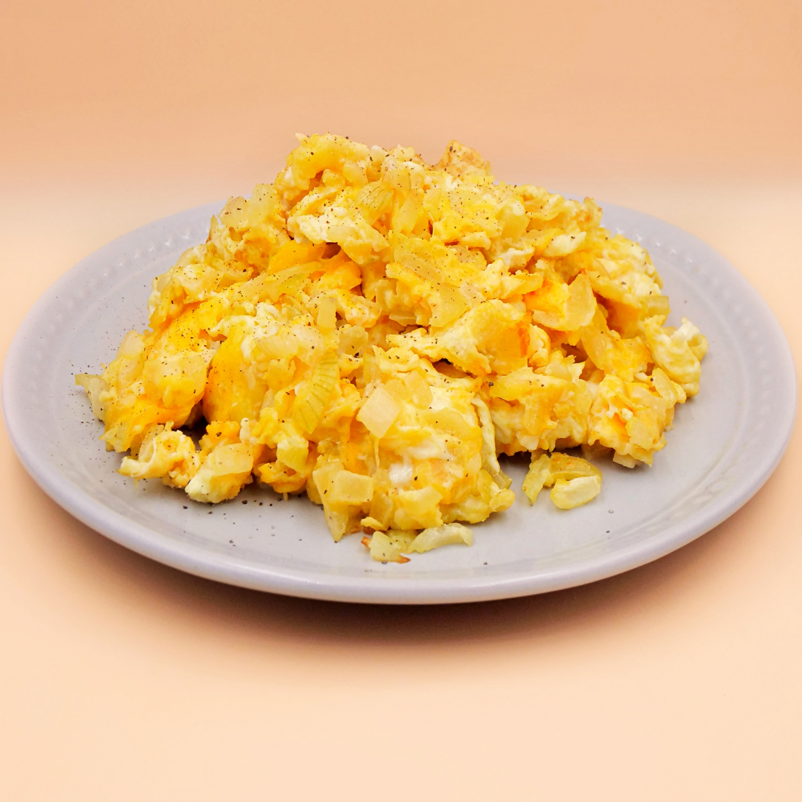

<Jajecznica
Składniki
- jajka
- masło
- sól
- pieprz
Sposób wykonania
- Rozpuść masło na patelni.
- Roztrzep jajka w misce.
- Wlej jajka na patelnię.
- Smaż jajka na małym ogniu, mieszając je co jakiś czas.
- Gdy jajka zaczną się ściągać, dopraw je solą i pieprzem.
- Podawaj na talerzu.
